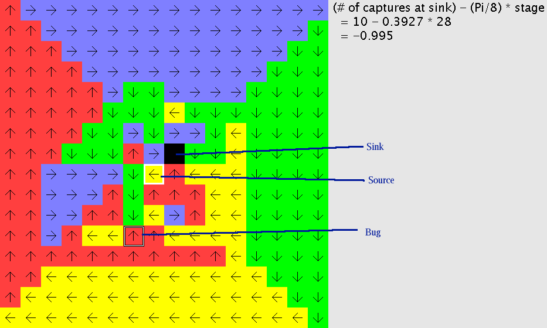
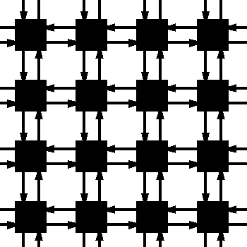

2-D Walk on a square grid. Each vertex is represented by a square and is connected to each of its four closest neighbors.
There is a source at (0,0) (shown as a square with a white border) and a sink at (1,1) (shown as a solid black square). In each stage, the bug starts at the source, and takes a walk following the instructions given by successive rotors, until it either arrives at the sink (at which point it hops back to the source) or it arrives at the source; either way, the stage is over, and a new stage start.
The applet keeps track of how many times the bug arrives at the source (by walking from one of the four cells adjoining the source, not by hopping from the sink) and how many times the bug arrives on the sink.
The location of the bug is indicated by a square superimposed with the cell occupied by the bug.

The underlying directed graph is an infinite 2-D square graph:

I have introduced artificial linitations into this simulation:
// from src/TwoDeeWalk.java :
/** Maximum size I want this system to get to.**/
public static int MAX_SIZE = 2024;
/** Maximum size that gets displayed.**/
public static int MAX_DISPLAY_SIZE = 256;
These constants control how large the simulation is allowed to grow. Once the bug visits a vertex outside of a MAX_SIZE x MAX_SIZE square centered at the origin, the system will halt, refusing to allocate more memory to the system.
The applet will not display any vertices outside of a MAX_DISPLAY_SIZE x MAX_DISPLAY_SIZE square centered at the origin, even though the bug is allowed to visit those vertices.
If you have a java compiler, feel free to change these values and recompile.